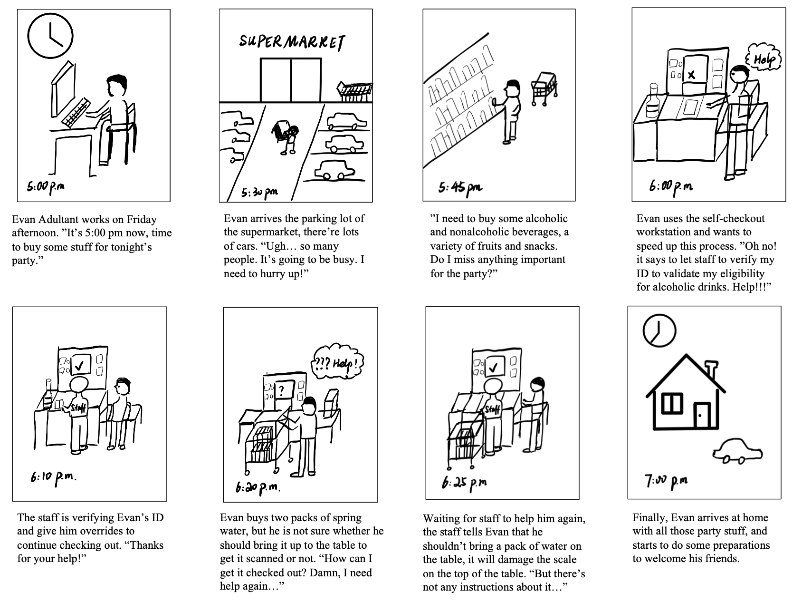
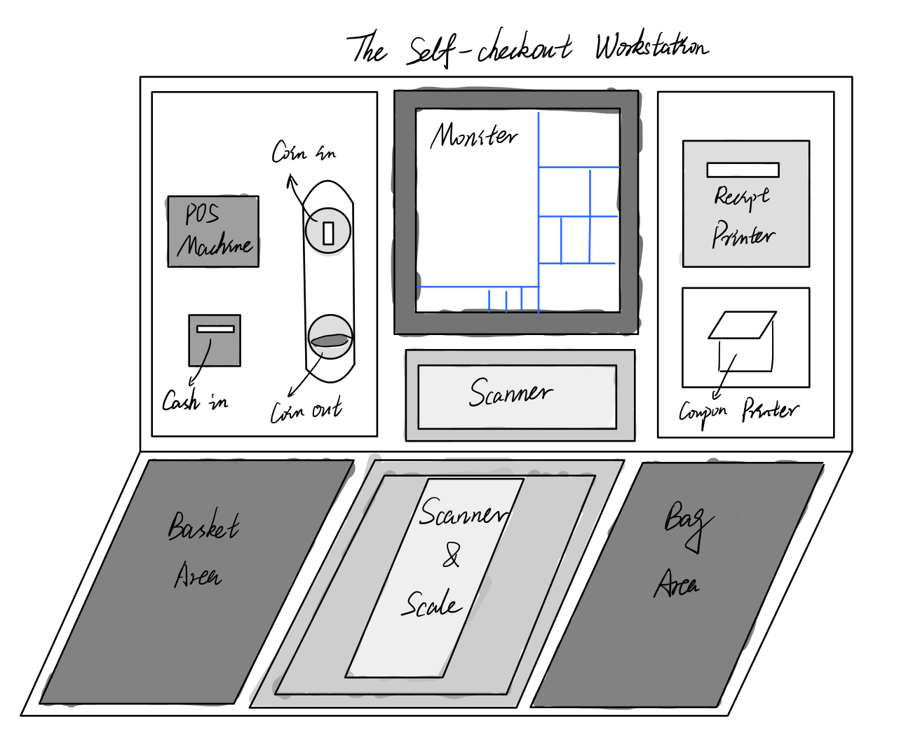
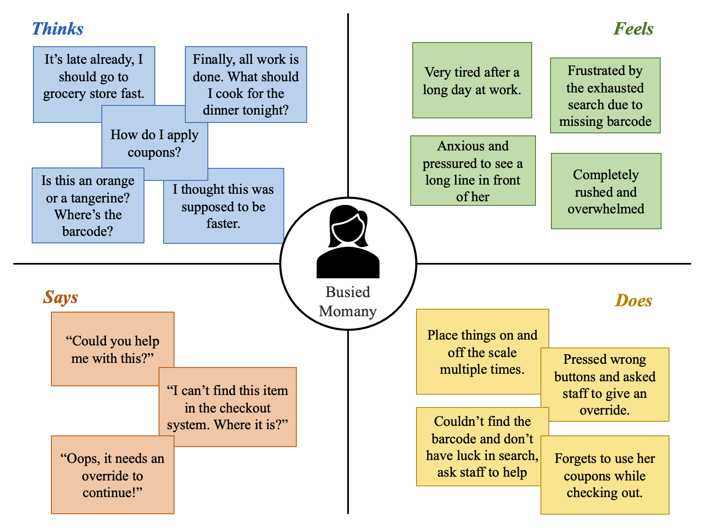
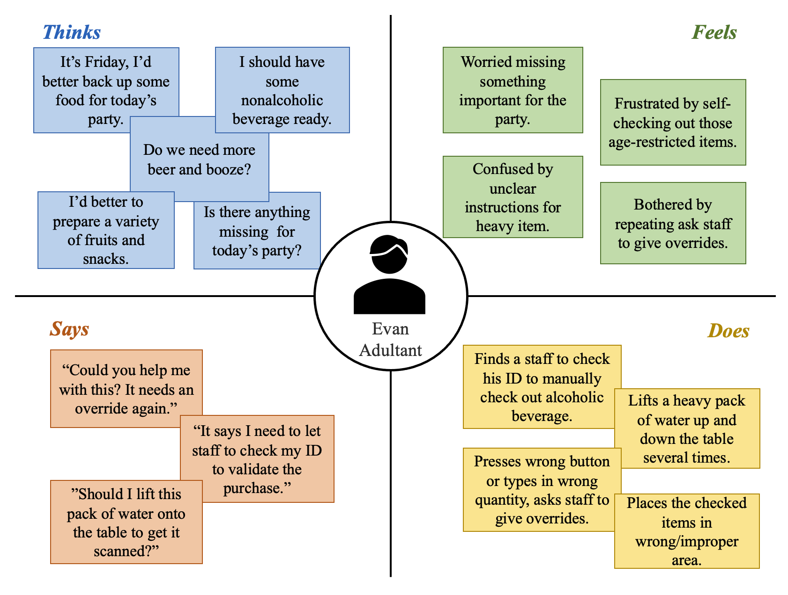
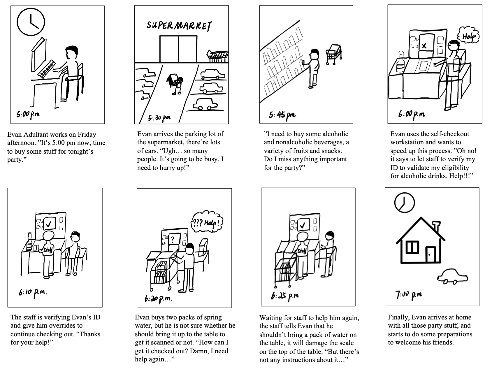

Storyboards
I choose the persona, Evan Adultant, to create a storyboard (please see below).

Have you ever tried to step into a user's shoes. In this project, I observed real users interacting with an interface, grocery store self-checkout station, interview these individuals about their experiences, create personas based on these users, and illustrate a storyboard for one of the personas.
Selected Interface: Grocery store self-checkout station
Sketch and description of the interface:

Figure 1: The sketch of the self-checkout workstation at stop&shop (a grocery store). The customers of the grocery store use it to scan items and puts them in a bag, then pay for the items using cash or a card. And the self-checkout workstation will print out receipts and coupons. The front and bottom scanner scan the barcodes of items, and the weight of the items in the bag is measured by the scale on the bottom. The consumers can pay for items using a card via electronic POS machine, or cash and coin via the corresponding windows on the left-hand side. The receipts and coupons will be printed out throguh the printers on the right-hand side. All checked-out items needs to be put in the bag area.
Here are my key observations:
The followings are interview questions:
Based on interviewees' response, I've summarized them into several points below:
Busied Momany is a married mother of three kids and has a full-time job, she needs to prepare dinner for her family and rushes to grocery store to by ingredients in hurry.

The interface problems that the persona face:
Why & how this persona represents the users of this interface:
Evan Adultant is an adult who likes to gather with his friends and organizes party on each Friday's night, he will go to the grocery store to buy some fruits, alcoholic/nonalcoholic beverages, snacks, and other stuff.

The iterface problem that the persona face:
Why & how this persona represents the users of this interface:
I choose the persona, Evan Adultant, to create a storyboard (please see below).

THANK YOU FOR READING THIS PAGE!